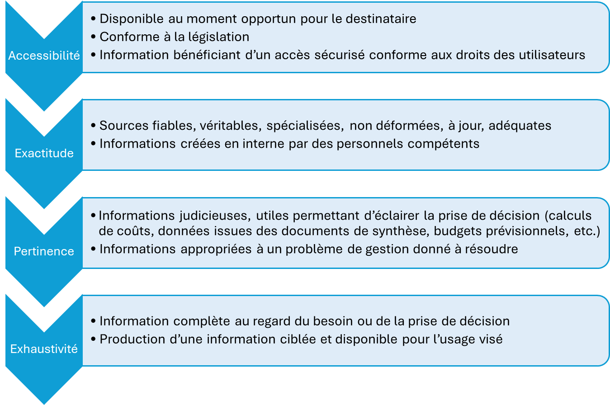
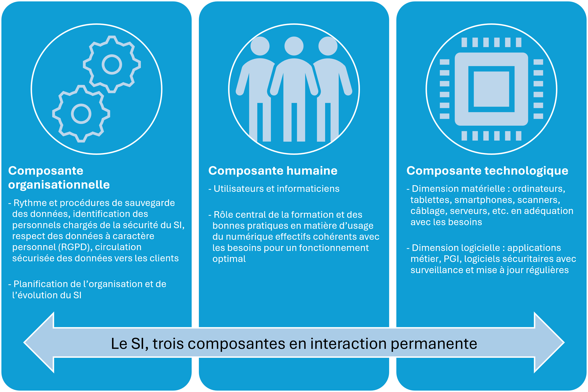
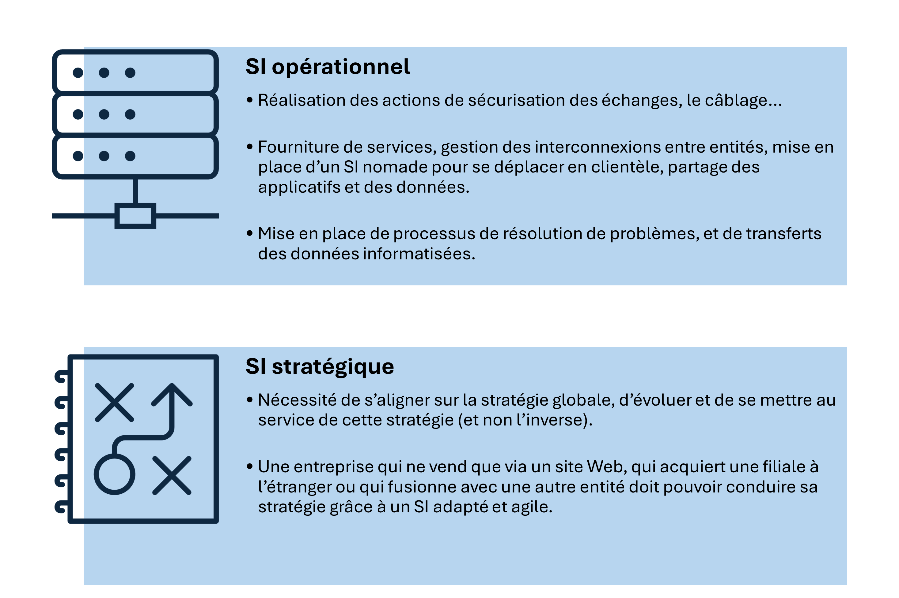
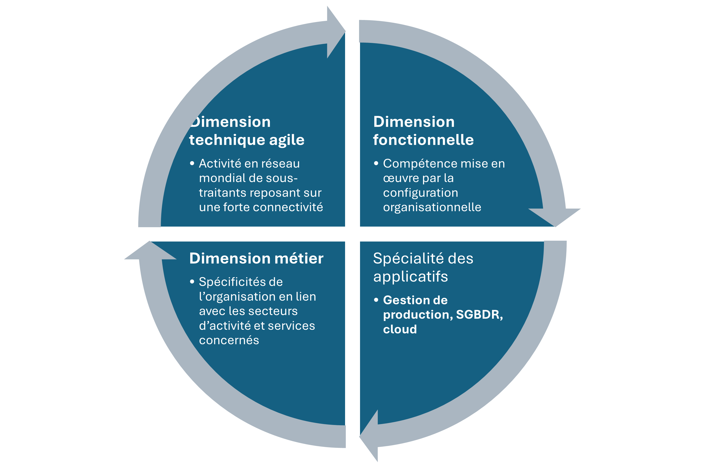
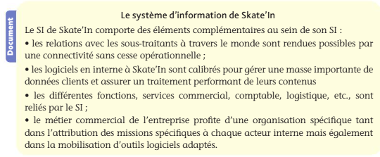

Programme
Pédagogie
Compétences attendues
- Analyser la qualité d’une information ;
- Repérer et mettre en œuvre des procédures de contrôle de la qualité d’une information ;
- Mettre en évidence le rôle du système d’information dans une organisation ;
- Repérer les composantes du système d’information et leur rôle ;
- Différencier les niveaux du système d’information.
Savoirs associés
- Critères de qualité de l’information : accessibilité, exactitude, actualité, pertinence, exhaustivité ;
- Nature et composantes du système d’information : interaction des ressources humaines, technologiques et organisationnelles ;
- Présentation de l’organisation comme un ensemble de trois sous-systèmes : décisionnel, opérant et d’information ;
- Rôles opérationnel et stratégique du système d’information ;
- Les différents niveaux du système d’information : métier, fonctionnel, applicatif, technique.
Plan
- Cours 1.1.1 La qualité de l’information dans les organisations 1.1.2 Le fonctionnement du système d’information (SI) 1.1.3 Les niveaux du système d’information (SI)
- Synthèse
Mots clés
Accessibilité, Agilité, Audit, Fiabilité, Gestion des droits d’accès, Performance globale, Qualité
Le système d’information (SI) d’une organisation permet de collecter, produire, mémoriser et diffuser une information de qualité nécessaire aux acteurs.
Le Big Data est au cœur des problématiques des systèmes d’information via les 3V :
- Volume (quantité de données créées et exploitées) ;
- Velocity (rapidité tant dans leur création que dans leur transmission) ;
- Variety (variété). La gestion et la qualité de ces informations constituent un enjeu crucial au service de la performance globale.
À quoi ça sert ?
Vous serez un jour devant un tableau de chiffres qu’on vous demandera de commenter, ou devant une balance comptable qui ne tombe pas juste.
La première question à se poser n’est jamais « comment calculer ? » mais « d’où viennent ces données et valent-elles quelque chose ? ».
Ce chapitre vous apprend à juger la qualité d’une information avant de vous en servir, et à comprendre comment une organisation l’organise, la range et la fait circuler. C’est la base de tout le reste du programme.
Cours
1.1.1 La qualité de l’information dans les organisations
Chez Vasseur — la situation
Camille Vasseur veut savoir combien l’entreprise a gagné sur les chantiers de vérandas cette année. Sofiane Belkacem lui sort un chiffre du logiciel comptable.
Nadia Perrot, elle, en sort un autre de son tableur d’atelier. Les deux sont sincères, les deux sont faux : le premier ignore les retouches facturées après coup, le second oublie les heures des poseurs.
La question de cette section : à quoi reconnaît-on qu’une information est bonne, et que faire pour qu’elle le devienne ?
Introduction
- Une organisation performante repose sur l’exploitation d’informations nécessaires à la prise de décision ou à la production de documents financiers, commerciaux ou juridiques :
- Une information comporte ainsi cette caractéristique d’utilité dans un contexte précis ;
- L’information, pour être transmise, échangée, traitée, conservée, modifiée, etc., prend une dimension pratique et devient une donnée.
Définitions — de la donnée à la connaissance
Le programme distingue trois niveaux qu’il ne faut pas confondre :
- la donnée est un fait brut, enregistré tel quel, sans interprétation :
12 500,2026-03-14,Dupont;- l’information est une donnée mise en contexte, qui prend un sens pour quelqu’un : « le client Dupont a acheté pour 12 500 € le 14 mars 2026 » ;
- la connaissance est ce que l’on tire de plusieurs informations rapprochées, et qui permet d’agir : « Dupont commande davantage au printemps, il faut le relancer en février ».
Une image pour comprendre
Une donnée, c’est un ingrédient dans le placard. Une information, c’est la recette qui dit quoi en faire. La connaissance, c’est le tour de main du cuisinier qui sait, après cent services, que ce plat marche mieux le vendredi soir. Un système d’information sert à transformer les ingrédients en plats — pas à accumuler des placards pleins.
Chez Vasseur
Menuiseries Vasseur tient un stand à la foire de Tours chaque printemps. Les commerciaux notent le nom, le téléphone et le projet des visiteurs intéressés : « M. Renaud — 06 12 34 56 78 — 4 fenêtres alu, maison 1970 ». Ce sont des données.
Enregistrées dans le logiciel commercial et rapprochées du secteur géographique, elles deviennent une information exploitable : une liste de prospects à rappeler.
Et quand, trois ans de suite, on constate que les visiteurs de la foire signent deux fois plus que les contacts venus du site Internet, l’entreprise en tire une connaissance : le stand mérite d’être maintenu.
Les critères de qualité de l’information
Définition
La qualité de l’information désigne sa capacité à répondre aux besoins de chaque organisation.
- La qualité de l’information constitue un enjeu essentiel pour différencier les organisations entre elles ;
- L’information doit satisfaire divers critères afin d’être estimée de qualité.

- Dans une recherche sur un site Web, l’accessibilité est évaluée en nombre de clics (Click-Through Rate-CTR) pour atteindre l’information ⇒ Une accessibilité optimale équivaut à un maximum de trois clics.
A savoir
La consultation de sites Internet doit permettre de s’assurer de la qualité des contenus. Préférez les sites institutionnels (.org/.gouv) aux sites commerciaux (.com).
Les sources internes ou externes
- Chaque organisation est amenée à utiliser des informations :
- En provenance de l’extérieur (enquêtes statistiques Insee, enquêtes marketing confiées à des cabinets de conseils, réseaux sociaux, site Web, etc.) ;
- Issues d’un processus généré en interne (par les salariés) et destinées aux acteurs internes (services comptable, commercial, production, etc.), aux partenaires économiques (clients, sous-traitants, fournisseurs) et aux entités administratives (centre des impôts, Urssaf, sécurité sociale, etc.) ;
- Cette production interne d’informations est régulière et prend des formes diverses :
- Etablissement des documents de synthèse (bilan, compte de résultat, annexes) pour l’administration ;
- Calcul du montant de TVA due ;
- Réalisation d’un bulletin de salaire électronique pour les salariés ;
- Production d’informations issues du contrôle de gestion au travers des calculs de coûts, des résultats analytiques, des budgets, de la gestion des stocks, etc.
- Que les sources d’information soient externes ou internes, elles obéissent aux mêmes critères de qualité.
Chez Vasseur
Pour chiffrer une véranda, Élodie Fournier a besoin d’informations externes — le tarif du fournisseur d’aluminium, le taux de TVA applicable en rénovation — et d’informations internes : le temps de pose moyen constaté sur les chantiers comparables, le coût horaire d’une équipe, la marge minimale fixée par la direction.
En les combinant, elle produit une nouvelle information : le prix du devis. Si l’une des sources d’entrée est fausse, le devis l’est aussi — et personne ne s’en apercevra avant la fin du chantier.
Les procédures de contrôle de la qualité de l’information
- L’information vient alimenter la prise de décision, déclencher l’action ou répondre aux obligations légales et administratives ;
- Elle constitue ainsi une ressource clé pour toute organisation et doit donc être contrôlée afin d’en vérifier la qualité.
Définition
Une procédure désigne les activités et missions à réaliser afin d’atteindre un objectif : la qualité de l’information. Cela fait référence à tout ce qui est mis en œuvre pour favoriser, améliorer, planifier et maîtriser la qualité.
| Contexte | Procédure de contrôle |
|---|---|
| Identification de l’émetteur et du destinataire des données. | - Gestion des droits d’accès sur le système d’information afin de déterminer qui peut collecter, modifier, créer et supprimer des données ; - Mise à jour planifiée de cette gestion des droits d’accès : départ des utilisateurs, changement de poste de travail, embauche, etc. ; - Utilisation de signature électronique, chiffrement. |
| Utilisation optimale de l’information | - Audit du SI afin d’en diagnostiquer les failles pouvant impacter la qualité des données : nombreuses saisies, absence d’interopérabilité entre les logiciels, manque de formation des utilisateurs, mises à jour irrégulières, etc. ; - Utilisation de référentiels de bonnes pratiques (ex. : Cobit) ; - Visibilité des conditions générales de vente (CGV) sur le site marchand. |
| Risques à maîtriser afin de ne pas hypothéquer la qualité de l’information | - Mise à jour régulière des logiciels sécuritaires ; - Compatibilité des logiciels entre eux au sein du SI à vérifier et à prendre en compte au moment des choix applicatifs, notamment en vue de l’implémentation d’un progiciel de gestion intégré ; - PGI (modules compatibles) ; - Mise en place d’interfaces (circulation des données) entre logiciels, d’échanges de données informatisées afin de limiter les saisies ; - Mise en place d’une certification ISO 9001 (management de la qualité) ; - Utilisation de protocoles https garantissant la sécurité des sites partenaires. |
A savoir
La qualité désigne également la gestion en termes de coûts qu’engendre un SI. Comme toute fonction dans une organisation, le SI doit être en capacité de générer des performances au moindre coût.
Vérifiez que vous avez compris
Le service commercial dispose d’un fichier de 4 000 prospects, constitué il y a six ans et jamais mis à jour depuis. Quel critère de qualité fait défaut, et quel autre reste satisfait ?
L’actualité fait défaut : les coordonnées ont vieilli, une partie des prospects a déménagé ou n’a plus de projet. L’exhaustivité peut aussi être en cause, puisque six ans de nouveaux contacts n’y figurent pas. En revanche l’accessibilité reste satisfaite — le fichier est disponible immédiatement. C’est bien le problème : une information très accessible peut être totalement inutilisable.
Mise en pratique
Cas pratique 1 : Bobsleigh’Tecnik
La société Bobsleigh’Tecnik fabrique des bobsleighs et des accessoires dédiés à cette pratique sportive. L’entreprise dispose d’un système d’information performant et doit en permanence se mettre en phase avec les besoins des clients. Elle consulte ainsi régulièrement les avis, notations et commentaires sur les sites Web de ses concurrents.
Bobsleigh’Tecnik renouvelle en permanence son catalogue de produits pour l’ajuster aux évolutions technologiques attendues. L’entreprise fait partie d’un laboratoire de R&D, Ice’Lab, sur les nouvelles technologies et matériaux innovants. Ice’Lab vient de mettre au point un matériau composite ultra-performant.
- L’information disponible au travers des réseaux sociaux est-elle de qualité ? Justifiez votre réponse.
- En quoi les informations issues du laboratoire de recherche permettent-elles de satisfaire certains critères de qualité ?
1.1.2 Le fonctionnement du système d’information (SI)
Chez Vasseur — la situation
Un particulier demande un devis à Blois. Élodie Fournier le saisit ; un commercial va relever les cotes ; l’atelier de Tours fabrique ; une équipe pose ; Sofiane facture ; le comptable enregistre. Six personnes, quatre logiciels, deux sites — et une seule commande.
La question de cette section : qu’est-ce qui fait tenir tout cela ensemble, et comment nomme-t-on chacun de ses rouages ?
Introduction
- Toutes les organisations sont aujourd’hui informatisées puisqu’elles s’appuient sur des modalités numériques pour fonctionner, prendre des décisions, réaliser leurs activités tant dans leur cœur de métier que dans les domaines de l’information comptable et financière.
Définition
Un système d’information (SI) désigne un ensemble structuré de ressources matérielles, logicielles, humaines et organisationnelles.
Attention à ne pas confondre
Le système d’information n’est pas le parc informatique. L’informatique (les machines et les logiciels) n’en est qu’une ressource parmi d’autres. Un classeur papier, une procédure de validation des factures ou la personne qui saisit les commandes font partie du SI au même titre qu’un serveur. C’est une confusion très fréquente — et très sanctionnée à l’examen.
Une image pour comprendre
Pensez au système nerveux d’un corps humain. Il ne fabrique rien lui-même : il capte ce qui se passe, transporte l’information jusqu’au cerveau, déclenche les réactions et garde la mémoire de ce qui a marché. Le SI joue ce rôle dans l’organisation — et comme le système nerveux, on ne mesure son importance que le jour où il tombe en panne.
Les quatre ressources du SI
Le programme demande de savoir les nommer : les ressources matérielles (ordinateurs, serveurs, réseau), logicielles (progiciels, applications), les données elles-mêmes, et les procédures — c’est-à-dire les règles humaines et organisationnelles qui disent qui fait quoi, quand et comment.
- Le SI a vocation à collecter, traiter, communiquer et conserver des données exploitées ;
- Il se caractérise par :
- Les différentes fonctions assurées (toutes les actions à mener) ;
- Ses composantes (les différents services, le découpage de l’organisation, etc.) ;
- Les rôles qui lui sont assignés.
Les fonctions du SI
- Le système d’information assure cinq fonctions essentielles : collecter, stocker, traiter, diffuser et sécuriser.
| Item | Description |
|---|---|
| Collecte des données | - Le SI n’est d’aucune utilité s’il n’est pas alimenté en données ; - Ces données émanent de l’extérieur (clients et fournisseurs), de l’intérieur de l’entreprise (création d’une facture) ; d’institutionnels (État, droit du travail, banques, administration fiscale). |
| Stockage des données | - Les traitements successifs des données collectées et produites nécessitent à chaque étape un stockage (données d’un devis stockées avant de générer un bon de commande) ; - La sauvegarde des données est réalisée dans les bases des clients ou des fournisseurs ; - L’archivage des données est imposé dans les contrats de travail des salariés. |
| Traitement des données | - Les données doivent être transformées pour atteindre les objectifs (ex. : le bon de commande d’un client doit faire l’objet d’un bon de livraison, d’une facture, d’un enregistrement comptable dans le logiciel comptable) ; - Chaque information peut générer une autre information (en suivant un processus). |
| Diffusion des données | - Toute information (stockée ou produite) n’a de réelle valeur que si elle parvient au bon destinataire qui en a besoin au bon moment avec un contenu fiable ; - Le système d’information doit permettre cette communication des données de façon sécurisée. |
| Sécurisation des données | - Les quatre fonctions précédentes ne valent rien si les données peuvent être perdues, faussées ou lues par n’importe qui ; - Le SI doit garantir que la donnée reste disponible (accessible quand on en a besoin), intègre (non altérée) et confidentielle (réservée aux personnes autorisées) — par les droits d’accès, les sauvegardes et le chiffrement ; - Cette fonction est développée dans la [[4. Reglementation securite et durabilite |
Les composantes du SI
A savoir
Les entreprises consacrent, en moyenne, 1 à 9 % de leur chiffre d’affaires à l’informatique, montant global dont 54 % sont dédiés à l’équipement et aux logiciels, 15 % aux services et 32 % au personnel.
- Les données, socle des informations dont chaque organisation a besoin, repose sur trois composantes essentielles :

Les rôles du SI
- Le SI est un vecteur de performance globale ;
- Il constitue l’épine dorsale de l’entité au regard des activités internes mais également vis-à-vis des clients, fournisseurs, administrations, etc. ;
- Les rôles assumés par le SI sont un véritable avantage concurrentiel ;
- On distingue trois rôles, qui correspondent à trois horizons de temps :
| Rôle | Horizon | Qui l’exerce | Exemple concret |
|---|---|---|---|
| Opérationnel | le quotidien | les exécutants | Enregistrer une commande, éditer une facture, saisir une écriture comptable |
| Tactique | quelques mois | l’encadrement intermédiaire | Suivre le délai moyen de règlement des clients pour décider de relancer |
| Stratégique | plusieurs années | la direction générale | Décider d’ouvrir un site de vente en ligne au vu de l’évolution des ventes |

L’identification des échelons du SI
- Le SI englobe différents échelons dans son fonctionnement ;
- Ces échelons se déclinent depuis l’utilisateur qui réalise ses missions au travers de son poste de travail jusqu’au fonctionnement totalement connecté entre entités nationales et internationales, administrations étatiques, comptables, fiscales, etc.
Vérifiez que vous avez compris
« Notre système d’information, c’est nos douze ordinateurs et notre serveur. » Pourquoi cette phrase est-elle fausse ?
Parce qu’elle confond le SI et le parc informatique. Les machines ne sont qu’une des quatre ressources du SI, aux côtés des logiciels, des données et des procédures — c’est-à-dire des règles qui disent qui saisit quoi, quand et comment. Une entreprise peut avoir douze ordinateurs neufs et un système d’information défaillant, parce que personne ne saisit les heures des poseurs.
Mise en pratique
Cas pratique 2 : North’Musik
Compétences attendues
- Analyser la qualité d’une information
- Repérer et mettre en œuvre des procédures de contrôle de la qualité d’une information
Domiciliée à Maubeuge, l’entreprise North’Musik est spécialisée dans la production d’instruments de musique. Les RH connaissent sur le bout des doigts les métiers de l’entreprise : fabrication, services commerciaux, présents dans divers salons professionnels, comptabilité, informatique, etc. Le système d’information est un axe central de performances. Cependant, le nouveau dirigeant, Jean Çalur, s’interroge sur les améliorations à apporter.
Le responsable du site Web de North’Musik déplore des inexactitudes dans le comptage des visiteurs uniques (VU). Manifestement 1 % de ces VU n’ont pas été comptés. Il s’appuie sur ces informations pour ajuster les commandes de produits dans les ateliers de fabrication de North’Musik et les commandes fournisseurs.
- Évaluez la gravité de ce manquement. Le responsable commercial de North’Musik vient de constater une erreur de mise à jour des tarifs sur 1 % des commandes client.
- Précisez l’importance revêtue par ce chiffre dans ce contexte. À la suite du licenciement d’un comptable de North’Musik il y a deux mois, aucune mesure n’a été prise en matière de droits d’accès le concernant.
- Énoncez les procédures à mettre en œuvre afin de garantir la qualité du SI de North’Musik.
1.1.3 Les niveaux du système d’information (SI)
Chez Vasseur — la situation
Thomas Lemoine passe ses journées à dépanner des imprimantes. Camille Vasseur, elle, se demande s’il faut ouvrir une troisième agence. Les deux parlent du « système d’information » — mais pas du même étage.
La question de cette section : comment décrire un SI par niveaux, pour savoir de quoi on parle et à qui s’adresser ?
L’identification des niveaux du SI
- Le SI peut être décomposé selon plusieurs dimensions indispensables à la concrétisation de ses missions ;
- Chacune de ces dimensions constitue un niveau du SI.

Les interactions entre les sous-systèmes
- Le système d’information est au cœur des sous-systèmes de l’organisation ;
- Tous les acteurs doivent agir sur le SI afin d’en renforcer l’agilité ;
- L’interaction entre ces sous-systèmes doit être dynamique et tournée vers la performance globale de l’entreprise :
- Le sous-système décisionnel doit permettre le traitement des informations internes et externes nécessaires à toute prise de décision :
- L’utilisation de systèmes de gestion de base de données relationnelle, de progiciels de gestion intégrés (PGI), de systèmes OLAP (On Line Analytical Processing), d’entrepôts de données (Data Warehouses)… agit sur la qualité de la décision ;
- Les solutions produisent de la valeur ajoutée, permettant ainsi à l’entreprise de se distinguer de la concurrence, ou Business Intelligence (BI).
- Le sous-système opérant est dédié aux métiers :
- Il les assiste dans leurs missions de collecte, stockage, traitement et diffusion de l’information ;
- Il satisfait ainsi le système décisionnel (ex. : gestion des stocks, maîtrise des coûts, suivi des salariés et des règlements).
- Le sous-système d’information offre les conditions de fonctionnement aux systèmes décisionnel opérant, facilitant les échanges d’informations.
- Le sous-système décisionnel doit permettre le traitement des informations internes et externes nécessaires à toute prise de décision :
Mise en pratique
Cas pratique 3 : Skate’In
Compétences attendues
- Mettre en évidence le rôle du système d’information dans une organisation
- Repérer les composantes du système d’information et leur rôle
- Différencier les niveaux du système d’information
L’entreprise Skate’In vend des skateboards, longboards et accessoires de protection en lien avec ces pratiques sportives. Skate’In dispose de deux boutiques situées au centre-ville d’Annecy ainsi que d’un site marchand très prisé par les internautes. À ce jour, 85 % des ventes se font en ligne. Skate’In est au cœur des problématiques numériques et dispose d’un SI performant mais en perte de vitesse depuis 6 mois. De nombreux fournisseurs et clients sont présents sur les territoires européen, américain et australien.
Missions
- Repérez les composantes du SI permettant un fonctionnement performant du SI de Skate’In.
- Mettez en évidence les fonctions du SI mobilisées dans le contexte d’une commande passée par un client australien.
- Montrez comment le SI de Skate’In s’appuie distinctement sur des rôles opérationnels et stratégiques de son SI.

QCM
Synthèse
Le rôle du SI dans les organisations
-
La qualité et le contrôle de l’information — cinq critères : accessibilité, exactitude, actualité, pertinence, exhaustivité. Ils s’apprécient au regard del’usage : 1 % d’erreur est négligeable sur une statistique de fréquentation, grave sur une facture. Le contrôle passe par les droits d’accès, l’audit du SI, les référentiels de bonnes pratiques et l’interopérabilité des logiciels ;
-
Les cinq fonctions du SI — collecter, stocker, traiter, diffuser, sécuriser. Les quatre premières produisent l’information ; la cinquième conditionne la valeur des autres ;
-
Les quatre ressources du SI — matérielles, logicielles, données, procédures. Le SI n’est pas le parc informatique : il englobe aussi les règles et les personnes. Ces ressources s’organisent en trois dimensions qui doivent interagir : technologique, humaine et organisationnelle ;
-
Les trois rôles du SI — opérationnel (le quotidien), tactique (le pilotage à quelques mois), stratégique (les décisions de direction) ;
-
Les quatre niveaux du SI — métier, fonctionnel, applicatif, technique. On les retrouve en 1.4 comme couches de l’urbanisation ;
-
Les trois sous-systèmes de l’organisation — décisionnel (il décide), opérant (il exécute), et le système d’information qui relie les deux et les alimente.
A savoir
Une interaction optimale entre toutes les composantes permet l’efficacité du SI et une réponse en adéquation avec les besoins de l’entreprise.
◀ Fil rouge : Menuiseries Vasseur · 1.2 La dimension humaine du système d’information ▶